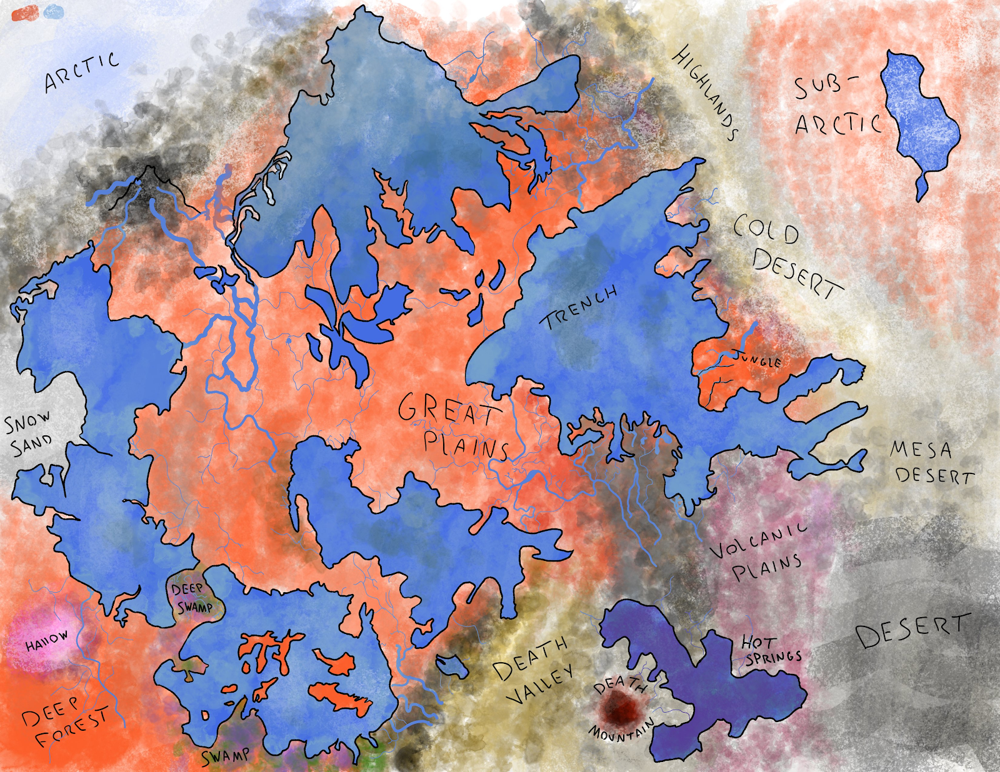

The World
The Light World

A map of the central region of the overworld.
The Sky
The skies of the Overworld are not dormant; At any point, among the clouds or blue skies, one might see flocks of birds, flying elephants, or some of many kinds of skyborne creatures. And in some places, when there is a thick cloud in the sky, there might just be a group of rather interesting people living on top of it. [add more sky stuff]
The Surface
The Great Plains
The Great Plains are a huge expanse of grasslands stretching roughly 330 miles east to west. The landscape consists of treeless hills and flat expanses of grasses of varying heights, as well as shrublands. The land across the plains, especially along rivers, is very fertile, leading many people to establish farms across this land. The largest city in [continent], [name], is situated in the plains, along the [name] ocean and one of its rivers.
The Fallen Kingdom
[once a kingdom in the northeast by the highlands, it fell to ruin because of something unknown. People still live there—mostly survivors, thieves, or others unlucky enough to be stuck there.]
Underground
The Great Nest
Among the world of bugs there is a great system of vast caverns, underneath the forests and fields of _____, that is truly fantastic. Here, in the expanses of the Great Nest, is the greatest and most diverse conglomeration of bugs and other underground creatures.
Within the Great Nest are many biologically diverse regions, including the Thousand Tunnels, the Spiked Caverns, the Den, and many other fascinating areas.
But perhaps the most interesting part of the Great Nest is the Pale Kingdom, a city and organization of intelligent bugs. The kingdom boasts a functioning government, magnificent buildings and structures, and millions of denizens under the rule of their mysterious king and queen. Among the bridges, electronic and mechanical feats, beautiful art pieces, and other structures, the apogee of this subterranean society is the central metropolis—the City of Bugs.
The city, which lies beyond an intricate bridge across the underground waters, and within the White Gate, is something to behold by one’s own eyes, but it is a huge expanse of buildings, glowing in the dark of the earth, with magnificent, edged architecture, and home to a culture found nowhere else on the planet.
East of the city are miles of underground caves of beautiful tropical growth known as the Greenway. These caves continue east and connect the city to the systems of caves to the southeast. Greenway is part of the Great Nest for a certain extent before gradually fading into the rest of the underground world. East of the city, in the west end of Greenway, is a lush and exceptionally pretty area under rule and care of the queen—this is the Undergarden.
There are four main gates within the Great Nest,
- White Gate - the west gate to the domain of the Pale Kingdom.
- Green Gate - the east gate to the Pale Kingdom and the west gate of Greenway.
- Brown Gate - More of a wall than a gate, this huge structure was built by the Pale Kingdom to block off the foul creatures of the Murk and Deep Swamp from entering the Great Nest.
- Black Gate - the Northern entrance to the Great Nest. Outside of this gate the caves grow dark and creatures grow feral.
- -deepnest/dark nest
The Dark World
The Surface
The Underground
The Fungal Horrors
A terrible pit where long-lost things fester and mutate in the fungus and the nearby plague. Really fucked up place
Caves of Chaos
Of all the great holes of the Dark Underground that brim with the evil, corruption, sorrow, and chaos of this world, none surpass the Caves of Chaos. In this cesspit of malicious beings and dangerous creatures of every type, there is nowhere safe. Cries of tortured despair and screams of pain echo constantly through the dark tunnels, as if the cavern’s dank air itself is suffering. Groups of anarchic and maniacal people lost to the insanity of this godforsaken place spend their time eating, torturing, raping, or whatever else transpires when they are not fighting violently and excessively with each other. The animals in this land, their souls and bodies long twisted by the sheer terror of these caves, are strong, malevolent, ravenous, and violent. In the depths of the twisting cave routes, huge beasts, abominations of nature, stalk around or lie in wait for whatever may be their next victim to tear into or enslave.
Because of the volcanic activity in the region, magma and searing water flow through many parts of the Caves of Chaos. Much of the area is unstable, leading to sudden bursts of overheated water or spontaneous magma leaks, which, combined with pits and spikes abound, make for incredibly dangerous terrain.
Heaven
Hell
The Farlands
The edges of the world where the fabric of reality
itself begins to fray. Those incomprehensible beings that
wear the fabric of reality as their clothing live beyond this.